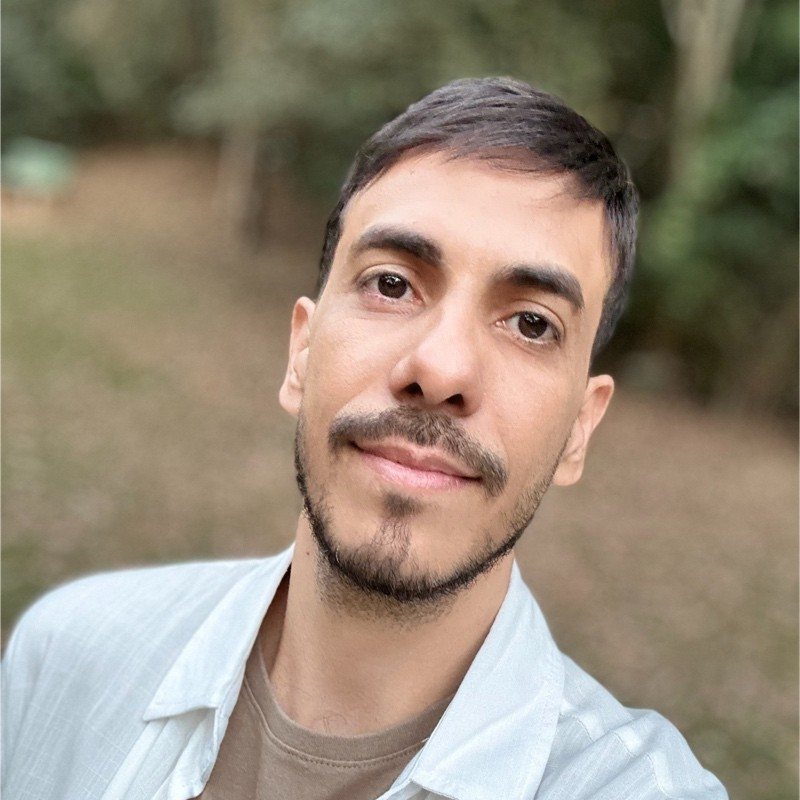
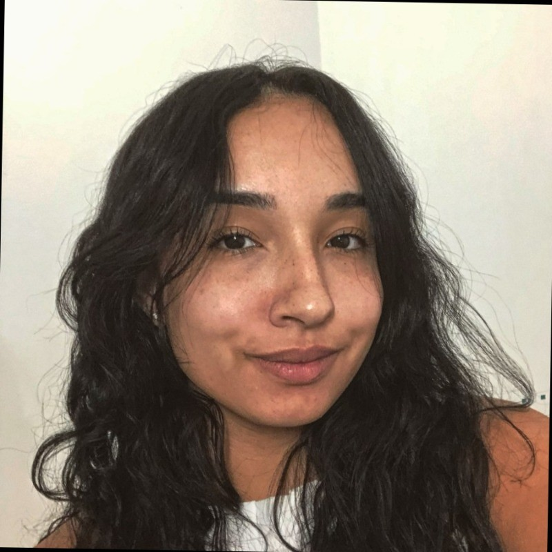
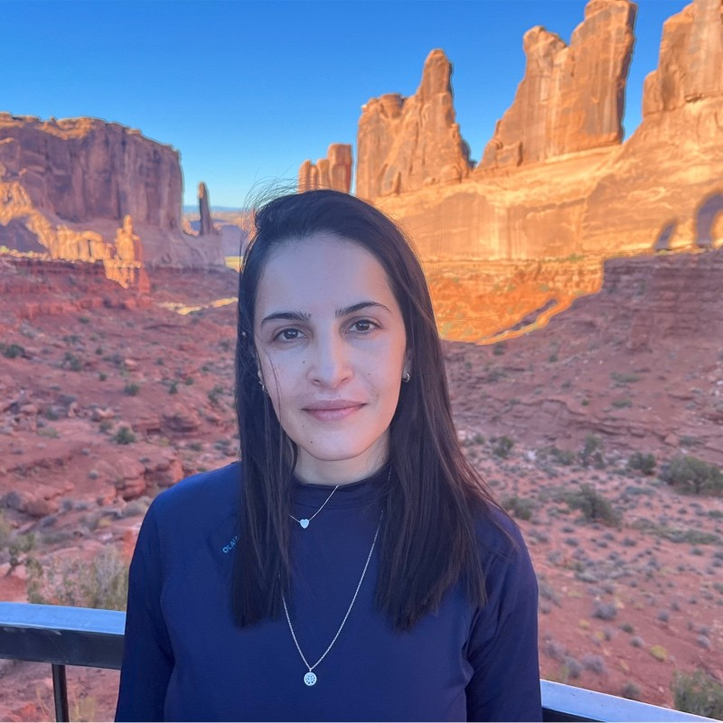

ACT Digital - https://www.actdigital.com
TMontec - https://www.tmontec.com.br
Turim - https://site.turimsoft.com.br
A aplicação foi desenvolvida com o objetivo de simular a prova teórica do Detran. Ela permite que os usuários pratiquem questões oficiais e testem seus conhecimentos sobre legislação de trânsito, direção defensiva, primeiros socorros e mecânica básica.
Tive o prazer de trabalhar com a Sabrina e posso dizer que ela é uma profissional extremamente comprometida e exploradora. Sempre busca entender o propósito do que está desenvolvendo, contribuindo com ideias e melhorias em todas as etapas do projeto. Seu envolvimento vai além do código: ela se preocupa com o impacto do produto final e está sempre disposta a fazer acontecer. É uma profissional que agrega muito valor e faz a diferença no time!
A Sabrina é uma excelente profissional, no qual sempre encarava os desafios que lhe eram impostos com bastante competência, aprendi bastante com ela. Ela também é uma pessoa muito organizada e motivada que nunca fugia de um desafio e é muito gratificante trabalhar com ela.
Recomendo a Sabrina. Trabalhar com ela foi uma experiência transformadora: sua maneira descontraída de lidar com os desafios torna o ambiente mais leve, sem jamais perder a seriedade e a precisão quando necessário. Tive a oportunidade de aprender muito sobre organização de projetos ao lado da pessoa mais organizada com quem já trabalhei, e sua curiosidade em aprender e testar novas tecnologias continuamente eleva o nível dos nossos projetos. Sabrina é, sem dúvida, uma profissional inspiradora e um grande trunfo para qualquer equipe.

Trabalhar com a Sabrina foi uma experiência incrível! Ela é extremamente organizada, sempre mantendo tudo em ordem e garantindo que o trabalho flua da melhor maneira possível. Além disso, sua disposição para ajudar faz toda a diferença no dia a dia – é o tipo de pessoa que está sempre pronta para colaborar e tornar o ambiente mais leve e produtivo. Sem dúvida, uma profissional que agrega muito valor a qualquer equipe!

Sabrina é uma desenvolvedora comprometida com entregas e prazos e muito determinada a superar os próprios desafios, assumindo demandas fora da sua zona de conforto. Se comunica com clareza e de forma objetiva, sabendo explicar problemas técnicos a nível de negócio sem dificuldades. O período que trabalhamos juntas esteve muito dedicada em documentar processos e fluxos garantindo que todos do time teriam visibilidade do que e como foi feito!

Gostaria de entrar em contato? Me mande uma mensagem e eu irei retornar assim que possível!